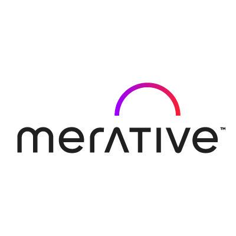

Social Innovation:
From Cross-Cultural Communication to Smart Practice
A strategy course linking AI, management, and social innovation.
AI is treated as an adoption, governance, and market-design problem rather than a technical implementation topic.

Course Architecture
From healthcare strategy to the smart silver economy
Build vs buy and failed scale-up.
Regulation, partnerships, value chain.
Governance, platforms, trapped value.
Connected infrastructure and scale economics.
Public deployment, bias, accountability.
Longevity market and capstone design.
Week 1
AI Strategy in Healthcare
Management Focus
Adoption is a strategic decisionStudents test AI investment logic at board and business-unit level.
Key Tensions
- Build vs buy
- Vendor dependence
- ROI framing
Theory Lens
- Disruptive Innovation
- Technology Acceptance Model
- Resource-Based View
Case Signal
$4B in acquisitions, sold near $1BThe gap frames strategic overreach and poor adoption fit.
Week 2
AI in the Medical Sector
Management Focus
Healthcare AI is a regulated market gameExecution depends on approvals, partnership design, and governance choices.
Key Tensions
- Market entry timing
- Partnership vs integration
- Liability allocation
Theory Lens
- Porter's Value Chain
- Institutional Theory
- Transaction Cost Economics

Case Signal
Radiology leads because data and workflow are standardisedStudents map where disruption and margin capture are most likely.
Week 3
AI & Data as Strategic Assets
Management Focus
Data quality and governance shape AI valueStudents assess where monetisation and readiness break down.
Key Tensions
- Governance vs speed
- Monetisation vs compliance
- Platform scale vs data silos
Theory Lens
- Dynamic Capabilities
- Platform Economics
- Information Asymmetry
Strategic Question
What value stays trapped in silos?Students identify where data governance unlocks competitive advantage.
Market Logic
AI amplifies the value of proprietary dataPlatforms capture more value when both sides reinforce training quality.
Managerial Output
Readiness diagnosisStudents judge whether firms can renew data advantage over time.
Week 4
AI & IoT Operations
Management Focus
AI-IoT is an operating model choiceStudents analyze capital allocation, scalability, and ecosystem coordination.
Key Tensions
- Efficiency vs complexity
- Scale vs interoperability
- Automation vs process redesign
Theory Lens
- Ecosystem Theory
- Diffusion of Innovations
- Lean Operations
Infrastructure Lens
Connected systems rarely win aloneSuccess depends on co-evolving device, platform, and service partners.
Adoption Lens
Early adopters move years aheadStudents explain where smart factories and connected health scale first.
Managerial Output
Investment prioritisationStudents test whether AI-IoT reduces waste or automates flawed workflows.
Week 5
AI for Social Impact
Management Focus
The unit of analysis shifts from firm to societyStudents evaluate legitimacy, bias, and measurable social return.
Key Tensions
- Innovation vs accountability
- High-tech vs appropriate tech
- Efficiency vs equity
Theory Lens
- Stakeholder Theory
- Appropriate Technology
- Triple Bottom Line
Application Areas
Welfare, education, justiceStudents compare gains in risk mitigation against unintended consequences.
Decision Test
Is AI genuinely the best solution?The course forces comparison with lower-cost community-centered alternatives.
Managerial Output
Social ROI assessmentStudents judge whether impact claims are financially and ethically defensible.
Week 6
Smart Silver Economy Business Model
Management Focus
The course ends with a capstone design exerciseStudents build AI-enabled business models for the longevity economy.
Key Tensions
- Welfare framing vs market framing
- Need-based design vs value proposition
- Scale opportunity vs affordability
Theory Lens
- Business Model Canvas
- Blue Ocean Strategy
- Base of the Pyramid
Market View
The longevity economy is a growth marketStudents identify under-served segments and new value spaces.
Design Output
Business model stress testTeams define customers, channels, partners, and revenue logic.
Capstone Outcome
Commercially plausible, socially defensible venture ideasThe course closes with project presentations and challenge.
Assessment
How students are evaluated
Weekly response papers
30% · 500 words per week, submitted before class.
Case discussion participation
20% · Contribution quality during each in-class session.
Mid-course stakeholder analysis
20% · Due at the end of Week 3.
Final business model presentation
30% · Week 6 presentation with 15 minutes plus Q&A.